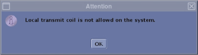
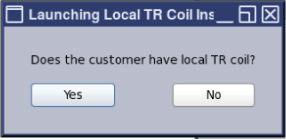
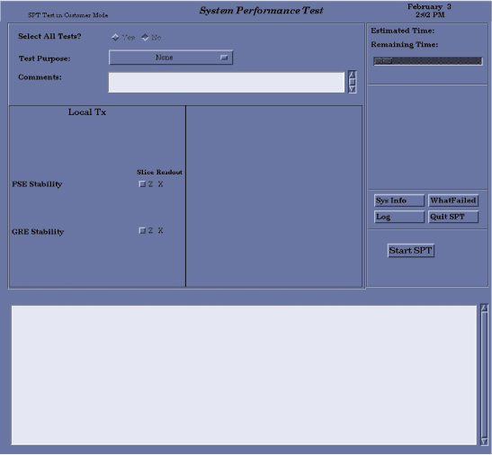

- 00000018WIA30B40E20GYZ
- id_131065552.5
- Feb 28, 2025 3:25:11 AM
SPT Stability Test for Local TR Coil
Prerequisites
| Required persons | Preliminary requirements | Procedure | Finalization |
|---|---|---|---|
| 1 | Not Applicable | 30 minutes | Not Applicable |
| Item | Quantity | Effectivity | Part number | Manufacturer |
|---|---|---|---|---|
| Local TR Coil | 1 | - |
See FRU Manual | - |
| Phantom used for MCQA | 1 | - |
See FRU List | - |
| Condition | Reference | Effectivity |
|---|---|---|
|
Cancel all previous exams. Click End Exam. | - | - |
|
Remove any patient positioning devices, such as patient restraints or other attached devices. | - | - |
About this task
For the permission of the clinical use of Local TR Coil, Local Tx stability test (FSE and GRE Stability) must pass for any of Local TR Coil. If the customer has two or more Local TR coils, only one test using one coil is necessary for the permission. Local Tx stability test is a part of System Performance Test.
Without passing the test, the following popup will comes up before scanning using Local TR Coil and unable to use the Local TR Coil.

Phantom Positioning for SPT Local Tx stability test
About this task
-
For SPT Local Tx stability test, setup phantom in Local TR Coil , landmark, and advance to scan per MCQA phantom setup procedure. Refer to Coil information for MCQA Phantom setup.
-
If you are in the middle of installation and the customer does not have Local TR Coil, no phantom setup is needed.
Invoking SPT Local Tx Stability Test
Procedure
- Start the SPT Local Tx Stability Test:
-
(For ICW Installation mode) Make sure the service
key is installed.
-
Access the Local TR Coil Installation through the Install and Calibration Wizard.
NoteFor SPT Local Tx Stability Test, the Local TR Coil Installation should be accessed from Install and Calibration Wizard , otherwise the SPT UI will be different and the test result may fail.
-
The following Popup menu will comes up.
-
If customer has Local TR Coil, select [Yes]. It will navigate to the next screen.
-
If customer does not have Local TR Coil, select [NO]. This test will be skipped in ICW.
End of this procedure. Move to next step of ICW.
Figure 2. Confirmation message 
-
-
Select Click here to start this tool.
The System Performance Test window appears with partial test selection.
Figure 3. System Performance Test window 
-
-
(For non-proprietary service tools) Service
key is not installed.
-
From the Common Service Desktop, select Image Quality > SPT Local Tx Test Menu.
-
Select Click here to start this tool.
The System Performance Test window appears with partial test selection.
Figure 4. System Performance Test window
-
-
(For ICW Installation mode) Make sure the service
key is installed.
- An SPT Test menu window displays on the desktop.
- To select a reason for the test, choose an option from the Test Purpose list. If desired, enter text in the Comments field.
- Select Z X for FSE Stability and Z X for GRE Stability.
- Click Start SPT to begin.
As the tests run, status messages display in the text box below the menu. Use the scroll bar on the right to move up or down through the messages.
SPT runs phantom position checks before starting any user-selected SPT, except the Coherent Noise Test. It takes approximately two minutes for the head phantom position check and two minutes for the body phantom position check. The test will not start unless the phantom position checks are successful. When SPT is complete, it displays a pop-up indicating the status of the completed tests, such as "All tests completed successfully" or “Severe Failure was detected."
- Once SPT is complete with pass, it displays a pop-up indicating
the status of the completed tests, such as "All tests completed successfully".Note
If SPT is complete with fail, it displays a pop-up indicating the status of failure. To see failure details, click WhatFailed.
- To exit SPT, click Quit SPT.
Finalization
Procedure
- Complete a TPS reset, which takes a few minutes, after completing SPT.
- Remove service equipment from the system.